Odoo apps for POS, Sales, Inventory, Accounting, HR and Website
Tamadoo makes add-on modules for Odoo in Indonesia: 88 apps for Odoo 16, 17, 18, 19 and 20, 15 of them free. Every app is sold and downloaded on the official Odoo Apps Store.
- Odoo 16.0 – 20.0
- 15 free apps
- Indonesian localisation: PPh 21, BPJS, QRIS, Terbilang
Browse by category
- Point of Sale38 appsPOS add-ons for Odoo: payments, cashier control, reports, restaurant and retail tools.
- Sales, CRM & Purchase15 appsOdoo add-ons for quotations, commissions, targets, discounts, CRM and purchasing.
- Inventory & Manufacturing5 appsOdoo add-ons for stock cards, stock valuation, delivery proof, assets and manufacturing cost.
- Accounting & Finance6 appsOdoo add-ons for financial reports, bank statements, invoice numbering and Indonesian accounting needs.
- HR & Payroll5 appsOdoo add-ons for Indonesian payroll, leave, attendance, field tracking and recruitment tests.
- Website & eCommerce6 appsOdoo add-ons for the website shop: filters, brands, stock display and WhatsApp contact.
- Productivity & Tools13 appsOdoo add-ons for backups, approvals, printing, menus, access and team knowledge.
Featured apps
 Indonesian Payroll (PPh 21 TER, BPJS, THR)Indonesian payroll on Odoo Community: PPh 21 TER with December recalculation, BPJS Kesehatan & Ketenagakerjaan, KEP-102 overtime, THR, PKWT compensation, Bukti Potong 1721-A1.
Indonesian Payroll (PPh 21 TER, BPJS, THR)Indonesian payroll on Odoo Community: PPh 21 TER with December recalculation, BPJS Kesehatan & Ketenagakerjaan, KEP-102 overtime, THR, PKWT compensation, Bukti Potong 1721-A1. POS QRIS PaymentStatic QRIS QR code payment display for Indonesian POS
POS QRIS PaymentStatic QRIS QR code payment display for Indonesian POS Sales Commission - Plans, Tiers, Settlements & Vendor BillsCommission per salesperson or sales team from customer invoices (invoiced or paid): percentage, tiered or per-unit rules by product and category, refunds deducted, approval, period settlements with vendor bills and a PDF statement.
Sales Commission - Plans, Tiers, Settlements & Vendor BillsCommission per salesperson or sales team from customer invoices (invoiced or paid): percentage, tiered or per-unit rules by product and category, refunds deducted, approval, period settlements with vendor bills and a PDF statement. Financial Reports Excel - Trial Balance, General Ledger, Profit & Loss, Balance SheetExport the Trial Balance, General Ledger, Profit & Loss and Balance Sheet to a formatted Excel workbook, on Odoo Community or Enterprise.
Financial Reports Excel - Trial Balance, General Ledger, Profit & Loss, Balance SheetExport the Trial Balance, General Ledger, Profit & Loss and Balance Sheet to a formatted Excel workbook, on Odoo Community or Enterprise. Stock Card - Product Movements with Opening and Running BalanceThe classic stock card (kartu stok) per product and location: opening balance, every receipt, delivery and transfer with its running balance, and the closing balance, on screen and in PDF.
Stock Card - Product Movements with Opening and Running BalanceThe classic stock card (kartu stok) per product and location: opening balance, every receipt, delivery and transfer with its running balance, and the closing balance, on screen and in PDF. Approval EngineMulti-level approval workflow on any model, without code: conditions, approval levels, field locking, signatures.
Approval EngineMulti-level approval workflow on any model, without code: conditions, approval levels, field locking, signatures. Attendance Geofence & SelfieGPS geofence per work location, selfie at check-in and check-out, late arrival and early leave against the working schedule.
Attendance Geofence & SelfieGPS geofence per work location, selfie at check-in and check-out, late arrival and early leave against the working schedule. Database BackupScheduled database backups with odoo.sh-style retention and pluggable storage backends
Database BackupScheduled database backups with odoo.sh-style retention and pluggable storage backends
All apps
 Disable Auto Download Invoice POSEnable or disable automatic PDF invoice download after POS payment
Disable Auto Download Invoice POSEnable or disable automatic PDF invoice download after POS payment Hide Product Information in POSShow or hide the product info button in the POS product screen per Point of Sale
Hide Product Information in POSShow or hide the product info button in the POS product screen per Point of Sale POS Auto Invoice for CompaniesAutomatically invoice POS orders for company customers
POS Auto Invoice for CompaniesAutomatically invoice POS orders for company customers POS Credit NoteCreate an accounting credit note from a POS order
POS Credit NoteCreate an accounting credit note from a POS order POS Customer BirthdayAutomatic birthday discount for customers at the POS
POS Customer BirthdayAutomatic birthday discount for customers at the POS POS Customer Debt WarningWarn the cashier when a customer has an outstanding balance
POS Customer Debt WarningWarn the cashier when a customer has an outstanding balance POS Customer QueueAssign queue ticket numbers to customers at the POS
POS Customer QueueAssign queue ticket numbers to customers at the POS POS Daily Sales ReportEnd-of-day PDF sales summary per session with product and payment breakdown
POS Daily Sales ReportEnd-of-day PDF sales summary per session with product and payment breakdown POS Delivery OrderAdd a delivery fee to a POS order in one tap
POS Delivery OrderAdd a delivery fee to a POS order in one tap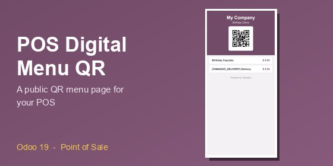
POS Digital Menu QRPublic digital menu page for a POS, reachable via QR code POS Discount by CategoryApply category-based discounts with optional manager PIN approval
POS Discount by CategoryApply category-based discounts with optional manager PIN approval POS Drink ModifierQuick drink/order modifiers added to a line at the POS
POS Drink ModifierQuick drink/order modifiers added to a line at the POS POS End of DayGuided end-of-day cash count and session summary
POS End of DayGuided end-of-day cash count and session summary POS Franchise RoyaltyCompute franchise royalties on POS sales per company
POS Franchise RoyaltyCompute franchise royalties on POS sales per company POS Happy HourAutomatic time-based happy hour discount at the POS
POS Happy HourAutomatic time-based happy hour discount at the POS POS Inventory AdjustmentQuick stock adjustment directly from the POS interface
POS Inventory AdjustmentQuick stock adjustment directly from the POS interface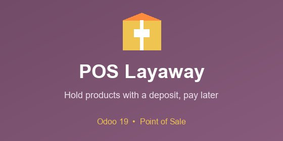
POS LayawayHold products for a customer with a deposit and pay later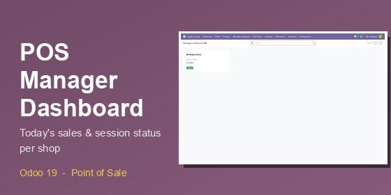
POS Manager DashboardManager dashboard of each shop's today sales and session status POS Member PriceAutomatic member discount for registered customers at the POS
POS Member PriceAutomatic member discount for registered customers at the POS POS Minimum ChargeEnforce a minimum transaction amount before payment is allowed
POS Minimum ChargeEnforce a minimum transaction amount before payment is allowed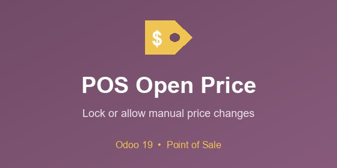
POS Open PriceControl whether cashiers can manually change product prices in POS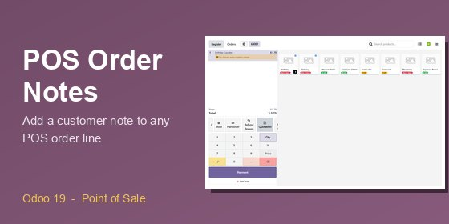
POS Order NotesAdd customer notes to individual POS order lines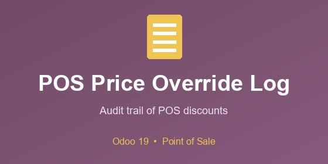
POS Price Override LogAudit log of discounts and price changes applied at the POS POS Product AvailabilityShow real-time stock badge on every product card in POS
POS Product AvailabilityShow real-time stock badge on every product card in POS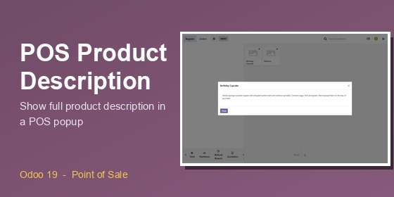
POS Product DescriptionShow full product description in a popup from the POS product grid POS Product FavoritesQuick-access bar for pinned favourite products in POS
POS Product FavoritesQuick-access bar for pinned favourite products in POS POS QR Payment DisplayShow a scannable payment QR code on the POS payment screen
POS QR Payment DisplayShow a scannable payment QR code on the POS payment screen- POS QRIS PaymentStatic QRIS QR code payment display for Indonesian POS
 POS QuotationSave a POS order as a Sales quotation in one tap
POS QuotationSave a POS order as a Sales quotation in one tap POS Refund EnhancedCapture a reason code for every POS refund
POS Refund EnhancedCapture a reason code for every POS refund POS Sales CommissionTrack sales commission per cashier from POS orders
POS Sales CommissionTrack sales commission per cashier from POS orders POS Sales TargetSet a monthly sales target per POS and track progress
POS Sales TargetSet a monthly sales target per POS and track progress POS Session ReportPrintable session report with product and payment breakdown
POS Session ReportPrintable session report with product and payment breakdown POS Shift HandoverRecord cashier shift handovers with a cash count
POS Shift HandoverRecord cashier shift handovers with a cash count POS Stock WarningAlert cashiers when adding products with low or zero stock
POS Stock WarningAlert cashiers when adding products with low or zero stock- POS Table ReservationManage table/booking reservations for your POS
 POS Void ApprovalRequire a manager PIN to void an order line at the POS
POS Void ApprovalRequire a manager PIN to void an order line at the POS POS Wholesale ModeToggle POS to wholesale pricelist with a single button
POS Wholesale ModeToggle POS to wholesale pricelist with a single button Company Lead Finder - Find Businesses on the Map by SentenceType '5 km around Kemang, coffee shops and dentists' and get the businesses from OpenStreetMap (free) or Google Places into Contacts or CRM leads, with duplicates detected.
Company Lead Finder - Find Businesses on the Map by SentenceType '5 km around Kemang, coffee shops and dentists' and get the businesses from OpenStreetMap (free) or Google Places into Contacts or CRM leads, with duplicates detected. Create Purchase Order from Sale OrderOne click to raise a purchase order for the products on a sale order
Create Purchase Order from Sale OrderOne click to raise a purchase order for the products on a sale order Field Visits - GPS Check-in for SalesPlan customer visits, check in and out from the phone with GPS and photos, and see every visit on the opportunity and the customer.
Field Visits - GPS Check-in for SalesPlan customer visits, check in and out from the phone with GPS and photos, and see every visit on the opportunity and the customer. Hide Product Code in PurchaseHide internal reference code from product names on purchase order lines
Hide Product Code in PurchaseHide internal reference code from product names on purchase order lines Product Image from URLSet a product image by pasting an image URL
Product Image from URLSet a product image by pasting an image URL Product QR Sheet - Public Product Info Page by QR CodePrint a QR code on your products and packaging: customers and staff scan it to read a mobile product page with your sections, specifications, downloads and contact buttons, in their language. No login, no website needed.
Product QR Sheet - Public Product Info Page by QR CodePrint a QR code on your products and packaging: customers and staff scan it to read a mobile product page with your sections, specifications, downloads and contact buttons, in their language. No login, no website needed. Revenue Split - Share Sales Credit between SalespeopleSplit the revenue of a confirmed sales order between salespeople and teams (whole order or per line), approved by a manager, and report the sales credit per salesperson, team, category and month.
Revenue Split - Share Sales Credit between SalespeopleSplit the revenue of a confirmed sales order between salespeople and teams (whole order or per line), approved by a manager, and report the sales credit per salesperson, team, category and month. Sale Order Global DiscountApply one discount to the whole sale order (percentage or fixed amount)
Sale Order Global DiscountApply one discount to the whole sale order (percentage or fixed amount)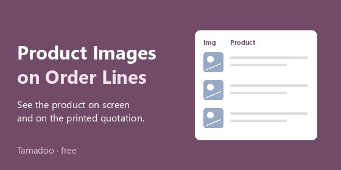
Sale Order Line Product ImagesShow product images on sale order lines and in the PDF quotation- Sales Commission - Plans, Tiers, Settlements & Vendor BillsCommission per salesperson or sales team from customer invoices (invoiced or paid): percentage, tiered or per-unit rules by product and category, refunds deducted, approval, period settlements with vendor bills and a PDF statement.
 Sales Discount Approval - Limits per Category, Product and LevelQuotations with discounts above the salesperson's limit, or prices below the minimum margin, go through approval levels (team leader, manager, director...) per product category before confirmation.
Sales Discount Approval - Limits per Category, Product and LevelQuotations with discounts above the salesperson's limit, or prices below the minimum margin, go through approval levels (team leader, manager, director...) per product category before confirmation. Sales Target - Nested Targets by Category, Team and Salesperson with AchievementSet sales targets per period, product category, sales team and salesperson; see the achievement from confirmed orders or invoices, rolled up level by level, with pivot and graph analysis.
Sales Target - Nested Targets by Category, Team and Salesperson with AchievementSet sales targets per period, product category, sales team and salesperson; see the achievement from confirmed orders or invoices, rolled up level by level, with pivot and graph analysis. Terbilang IDR - Purchase OrderPrint the Purchase Order total in Indonesian words (terbilang) on the PDF
Terbilang IDR - Purchase OrderPrint the Purchase Order total in Indonesian words (terbilang) on the PDF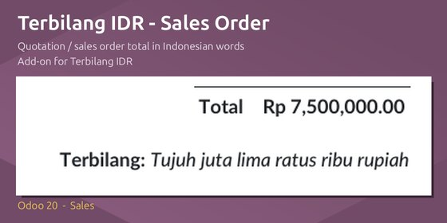
Terbilang IDR - Sales OrderPrint the Sales Order total in Indonesian words (terbilang) on the PDF WhatsApp Quotation SendSend quotations and invoices via WhatsApp — Business API or wa.me link
WhatsApp Quotation SendSend quotations and invoices via WhatsApp — Business API or wa.me link e-POD - Electronic Proof of DeliveryProof of delivery by QR code: receiver, received quantities, photos, signature and GPS geofence check, straight on the delivery order.
e-POD - Electronic Proof of DeliveryProof of delivery by QR code: receiver, received quantities, photos, signature and GPS geofence check, straight on the delivery order.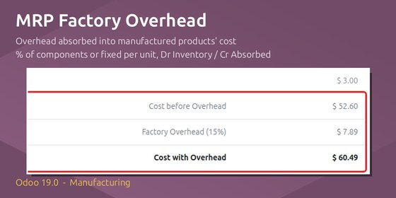
MRP Factory Overhead - Absorb Overhead into Finished Goods CostAdd factory overhead (a % of component cost or a fixed amount per unit) to the cost of manufactured products, posted Dr Inventory / Cr Overhead Absorbed, and shown in the BOM and MO overviews.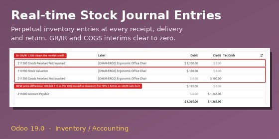
Real-time Stock Journal EntriesPost a perpetual inventory journal entry at every receipt, delivery, return and inter-warehouse transfer, with per-category Stock Input/Output and per-warehouse inventory accounts, like Odoo 18. RFID Asset Tracking - Tags, Audits & Reader APIPut RFID tags on your equipment, track where it is and who holds it, run location audits with a handheld reader and connect readers over a REST API.
RFID Asset Tracking - Tags, Audits & Reader APIPut RFID tags on your equipment, track where it is and who holds it, run location audits with a handheld reader and connect readers over a REST API.- Stock Card - Product Movements with Opening and Running BalanceThe classic stock card (kartu stok) per product and location: opening balance, every receipt, delivery and transfer with its running balance, and the closing balance, on screen and in PDF.
 Bank Statement Import Indonesia - BCA, Mandiri, BRI, BNI, CIMBImport the account mutation file of Indonesian banks as downloaded: layout detected, Indonesian numbers and dates understood, duplicates skipped, balances checked.
Bank Statement Import Indonesia - BCA, Mandiri, BRI, BNI, CIMBImport the account mutation file of Indonesian banks as downloaded: layout detected, Indonesian numbers and dates understood, duplicates skipped, balances checked. Cash Advance, Settlement & Petty CashEmployee cash advances with approval, payment and expense settlement (return or reimburse the difference), plus petty cash vouchers.
Cash Advance, Settlement & Petty CashEmployee cash advances with approval, payment and expense settlement (return or reimburse the difference), plus petty cash vouchers.- Financial Reports Excel - Trial Balance, General Ledger, Profit & Loss, Balance SheetExport the Trial Balance, General Ledger, Profit & Loss and Balance Sheet to a formatted Excel workbook, on Odoo Community or Enterprise.
 Print Journal Entries (PDF)Print selected journal entries as a clean PDF report
Print Journal Entries (PDF)Print selected journal entries as a clean PDF report Roman Month Invoice Numbering - 001/INV/XI/2026Number invoices, bills, credit notes and journal entries with a Roman-numeral month, e.g. 001/INV/XI/2026, restarting every month, per journal.
Roman Month Invoice Numbering - 001/INV/XI/2026Number invoices, bills, credit notes and journal entries with a Roman-numeral month, e.g. 001/INV/XI/2026, restarting every month, per journal.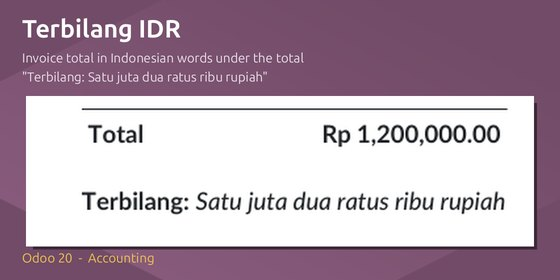
Terbilang IDR - Amount in Indonesian WordsPrint the invoice total in Indonesian words (terbilang): "Satu juta dua ratus ribu rupiah"- Attendance Geofence & SelfieGPS geofence per work location, selfie at check-in and check-out, late arrival and early leave against the working schedule.
 GPS Live Tracking - Live Map of Your Field TeamSee where your field team is on a live map: the Odoo web client (and the Odoo mobile app) shares the location of the users you choose, with day trails, distance, tracking hours and a visible indicator.
GPS Live Tracking - Live Map of Your Field TeamSee where your field team is on a live map: the Odoo web client (and the Odoo mobile app) shares the location of the users you choose, with day trails, distance, tracking hours and a visible indicator. Indonesian Leave (UU 13/2003 & Cipta Kerja)Indonesian statutory leave types, 12-day annual leave accrual, public holiday import from the SKB and cuti bersama charged to annual leave.
Indonesian Leave (UU 13/2003 & Cipta Kerja)Indonesian statutory leave types, 12-day annual leave accrual, public holiday import from the SKB and cuti bersama charged to annual leave.- Indonesian Payroll (PPh 21 TER, BPJS, THR)Indonesian payroll on Odoo Community: PPh 21 TER with December recalculation, BPJS Kesehatan & Ketenagakerjaan, KEP-102 overtime, THR, PKWT compensation, Bukti Potong 1721-A1.
 Psychometric Tests - Online Aptitude & Personality Tests for ApplicantsBuild psychometric and aptitude tests, invite candidates by email and get scored results: timed, anti-cheat, mobile-friendly test page, DISC and Big Five included.
Psychometric Tests - Online Aptitude & Personality Tests for ApplicantsBuild psychometric and aptitude tests, invite candidates by email and get scored results: timed, anti-cheat, mobile-friendly test page, DISC and Big Five included. Shop Hide Out of StockHide sold-out products from the eCommerce shop and search, per website
Shop Hide Out of StockHide sold-out products from the eCommerce shop and search, per website Shop VendorShow the vendor on shop product tiles and let shoppers filter the shop by vendor
Shop VendorShow the vendor on shop product tiles and let shoppers filter the shop by vendor Website Brand FilterAdd brand as a filterable sidebar in the website shop
Website Brand FilterAdd brand as a filterable sidebar in the website shop Website Multi-Select Filter: BrandAdd a multi-select Brand filter to the shop sidebar
Website Multi-Select Filter: BrandAdd a multi-select Brand filter to the shop sidebar Website Multi-Select FiltersMulti-select checkbox filters in the shop sidebar (category out of the box, extensible)
Website Multi-Select FiltersMulti-select checkbox filters in the shop sidebar (category out of the box, extensible) WhatsApp Floating ButtonFloating WhatsApp chat button on your website, one number or a popup with several contacts
WhatsApp Floating ButtonFloating WhatsApp chat button on your website, one number or a popup with several contacts- Approval EngineMulti-level approval workflow on any model, without code: conditions, approval levels, field locking, signatures.
- Database BackupScheduled database backups with odoo.sh-style retention and pluggable storage backends
 Database Backup: Google DriveStore scheduled database backups in your Google Drive (OAuth)
Database Backup: Google DriveStore scheduled database backups in your Google Drive (OAuth) Database Backup: Local FolderStore scheduled database backups in a local server folder
Database Backup: Local FolderStore scheduled database backups in a local server folder Document AI (Chat with your files)Upload PDF/DOCX/TXT and chat with them. Grounded AI answers with cited sources (RAG powered by Google Gemini).
Document AI (Chat with your files)Upload PDF/DOCX/TXT and chat with them. Grounded AI answers with cited sources (RAG powered by Google Gemini). Document AI - WhatsAppAnswer WhatsApp messages from your documents. Connects Tamadoo Document AI to the WhatsApp Cloud API.
Document AI - WhatsAppAnswer WhatsApp messages from your documents. Connects Tamadoo Document AI to the WhatsApp Cloud API. Hide Any Menu (User-wise)Hide selected menu items from specific users
Hide Any Menu (User-wise)Hide selected menu items from specific users Hide Create / Delete / Export Options by ModelHide Create, Edit, Delete, Duplicate and Export options per model and group
Hide Create / Delete / Export Options by ModelHide Create, Edit, Delete, Duplicate and Export options per model and group Knowledge Docs - Company Wiki with Revisions and a Public ReaderWrite your company documentation, how-tos and policies in Odoo: every change keeps a revision with a readable diff and one-click restore, and pages are read in a clean docs site for employees, portal users or anyone with the link.
Knowledge Docs - Company Wiki with Revisions and a Public ReaderWrite your company documentation, how-tos and policies in Odoo: every change keeps a revision with a readable diff and one-click restore, and pages are read in a clean docs site for employees, portal users or anyone with the link. Open PDF Reports in BrowserOpen PDF reports in a new browser tab instead of downloading them
Open PDF Reports in BrowserOpen PDF reports in a new browser tab instead of downloading them Sequence Roman Month - 001/SO/IX/2026 NumberingUse the month (and day) as a Roman numeral in sequence prefixes and suffixes, e.g. 001/SO/IX/2026, for sales orders, purchase orders, transfers and every other document numbered by a sequence.
Sequence Roman Month - 001/SO/IX/2026 NumberingUse the month (and day) as a Roman numeral in sequence prefixes and suffixes, e.g. 001/SO/IX/2026, for sales orders, purchase orders, transfers and every other document numbered by a sequence. Silent Print - Direct Printing with QZ TrayPrint any Odoo report (PDF, ZPL, ESC/POS) straight to a local printer without the download / print dialog. Printer per report, user and workstation, through QZ Tray.
Silent Print - Direct Printing with QZ TrayPrint any Odoo report (PDF, ZPL, ESC/POS) straight to a local printer without the download / print dialog. Printer per report, user and workstation, through QZ Tray. Telegram IntegrationManage sales, invoices, purchases and contacts from Telegram with real-time notifications
Telegram IntegrationManage sales, invoices, purchases and contacts from Telegram with real-time notifications
Contact
Questions about an app, a version you need, or a custom change: tama.odoo@gmail.com.
Buying and downloading happens on apps.odoo.com; each app page here links to its store listing for every Odoo version.